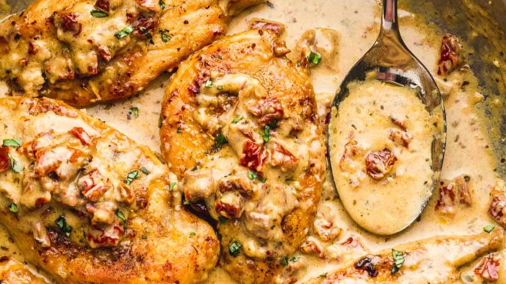

Marry Me Chicken Recipe

Ingredients:
- 4 boneless, skinless chicken breasts
- 2 tablespoons olive oil
- 1 teaspoon salt
- 1/2 teaspoon black pepper
- 1 teaspoon dried basil
- 1 teaspoon dried rosemary
- 1 teaspoon dried thyme
- 1/2 cup sun-dried tomatoes, chopped
- 4 cloves garlic, minced
- 1 cup chicken broth
- 1 cup heavy cream
- 1/2 cup grated Parmesan cheese
- Fresh basil leaves for garnish
Instructions:
-
Season chicken breasts with salt, pepper, basil, rosemary, and
thyme.
-
In a large skillet, heat olive oil over medium heat. Add chicken
breasts and cook until browned on both sides and cooked through
(about 6-7 minutes per side). Remove chicken from the skillet and
set aside.
-
In the same skillet, add sun-dried tomatoes and minced garlic. Sauté
for 2-3 minutes.
-
Stir in chicken broth, heavy cream, and grated Parmesan cheese.
Cook, stirring occasionally, until the sauce thickens (about 4-5
minutes).
-
Return the cooked chicken breasts to the skillet and simmer in the
sauce for an additional 2-3 minutes.
- Garnish with fresh basil leaves.
- Serve hot and enjoy!